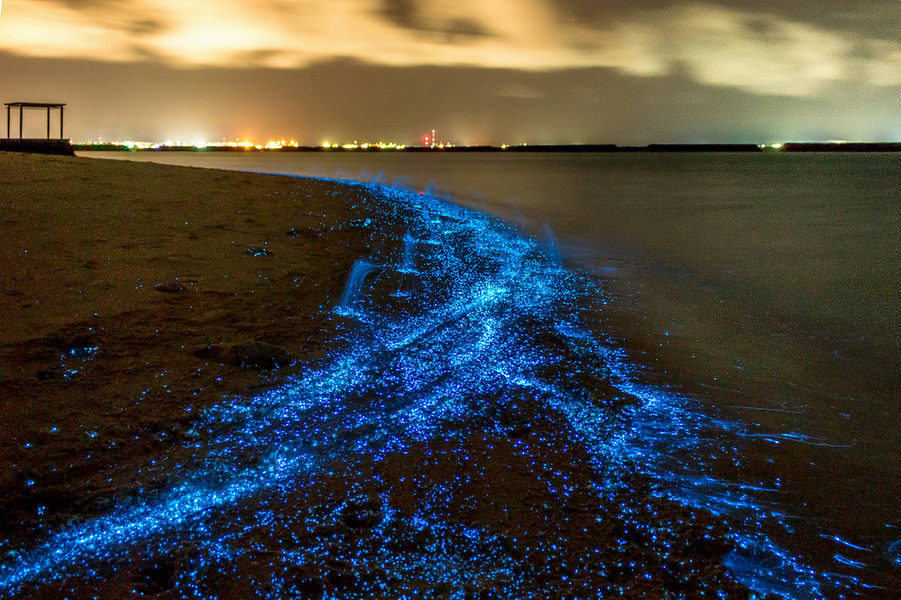
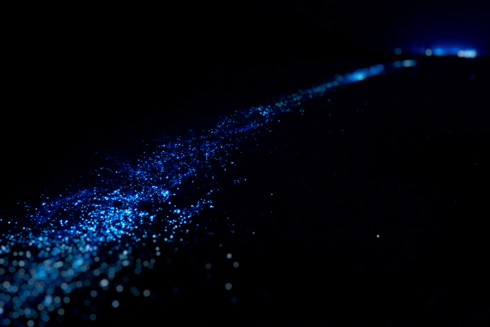
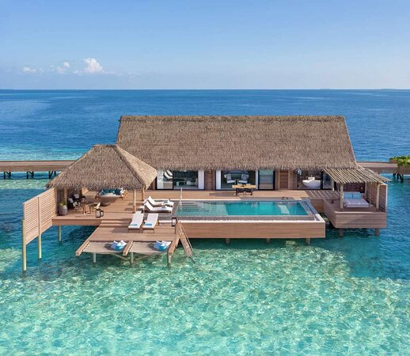
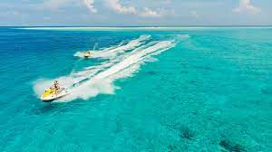
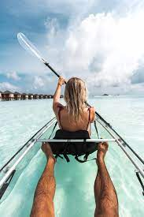
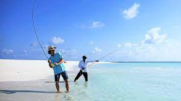
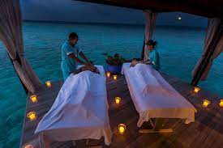
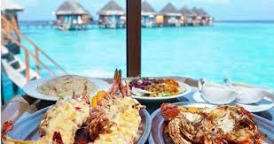

A stunning private island resort located at Vaadhoo Island in Raa Atoll, Maldives.
We are currently under construction and are scheduled to be complete by June 2022. However, bookings will open on the 10th of April 2022. Kindly take a look at our website to find out more about what we will have to offer.
This exclusive resort will be the first of it's kind to be located right alongside the spectacular glowing beach only found at Vaadhoo Island!
The beach is mostly known for its phenomenal fluorescent, glowing waves. This natural phenomenon occurs due to the presence of millions of marine microbes known as phytoplankton in the water. This phytoplankton is bioluminescent and as the skies get darker after sunset, these microscopic planktons emit a bright vibrant blue light in the water which creates an ethereal effect. This phenomenon makes the waves glow as they gently splash over the beach and is the ideal place to spend your time after sundown in the Maldives with your family and/or significant other.
The best time to visit the Glowing Beach is between June and October when the sea remains comparatively warmer due to the summer season. The warm, tropical, coastal weather is the perfect condition for the planktons to thrive and glow brightly. Lucky for you that is exaclty when we will open!
With 10 of the finest rooms operational at full capacity for your stay with us, enjoy exclusive luxury with rooms located along the beach. The calm nighttime waves flow past you and soothe your sleeping experience.
There are a multitude of activities including fishing, kayaking and jetskiing among many other's for you to enjoy all inclusive when you join us for your stay at NewHaven.
    Location: The Glowing Beach is situated at Mudhdhoo Island in the Maldives, also known as Vaadhoo Island. This beach is part of Vaadhoo Island, which is one of the islands in Raa Atoll.
Thank you for visiting this website. We really look forward to seeing you soon!